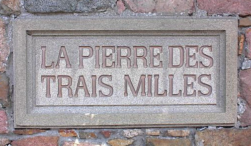
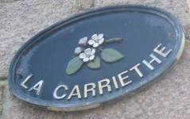
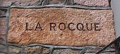

|
 |
 |
 |
 |
| Jèrriais | Angliais |
| la pièrre | stone |
| lé rotchi | rock |
| la rocque | rock |
| du sablion | sand |
| la mouaie | heap of stones |
| la galiche | pebbles |
| lé galot | pebble |
| lé seingl'ye | shingle |
| lé pèrron | boulder |
| pièrreux | stony |
| rotcheux | rocky |
| un galet | pebble |
| l'granit | granite |
| l'gravi | gravel |
| lé bantchet | rock ledge |
| la greune | rock |
| la boue | rock |
| lé grupé | stony ground |
| la borne | boundary stone |
| la pièrre dé mille | milestone |
| la pièrre dé taille | dressed stone |
| un êcliat | stonechip |
| les trais-quarts | stone chippings |
| l'êcadîn | stone chippings |
| les pièrres dé votte | archstones |
| la pièrre dé hèche | gate stone |
| lé machon | stonemason |
| lé pitcheux d'pièrre | stone dresser |
| la machonn'nie | masonry |
| un tailleur d'pièrre | stone cutter |
| la panne | chasing in stone |
| l'êtraiteûthe | coping stone |
| du bréha | pudding-stone |
| un raccro | jutting stone |
| du jais | jet |
| du laïesse | hard limestone |
| du marbre | marble |
| la pièrre à feu | flint |
| la pièrre dé caux | limestone |
| la pièrre dé grès | sandstone |
| la pièrre dé ponce | pumice |
| d'l'ardouaise | slate |
| d'la bliu-pièrre | shale |
|  |  |
 |  |
 |
Viyiz étout: